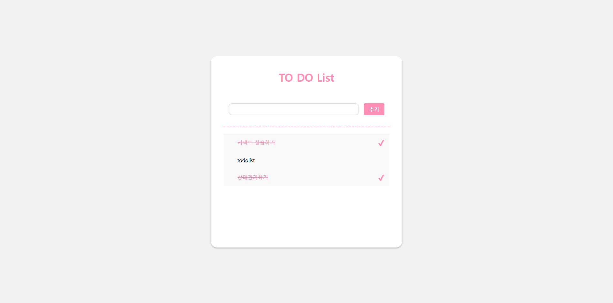

Project Details


To Do List 제작
- 작업 유형: 개인
- 개발 언어: React, CSS3, JQuery, HTML, GitHub
- 개발 도구: Figma, VS Code
- 프로젝트명: To Do List
- 제작 기간: 1 Week
- 사이트 유형: 적응형
- 해상도: 1440px
Preview
To Do List 추가
- - 입력칸에 추가할 내용 작성
- - 키보드 엔터 및 추가 버튼 클릭 시 하단 목록에 추가
To Do List 완료 및 삭제
- - 완료 표시 하고자 하는 할 일에 마우스 클릭 시 완료로 표시
- - 완료로 표시 된 할 일 클릭 시 미완료로 표시
- - 삭제 하고자 하는 할 일에 마우스 오버 시 왼쪽에 X 아이콘 생성
- - X 아이콘 클릭 시 해당 하는 할 일 목록에서 삭제